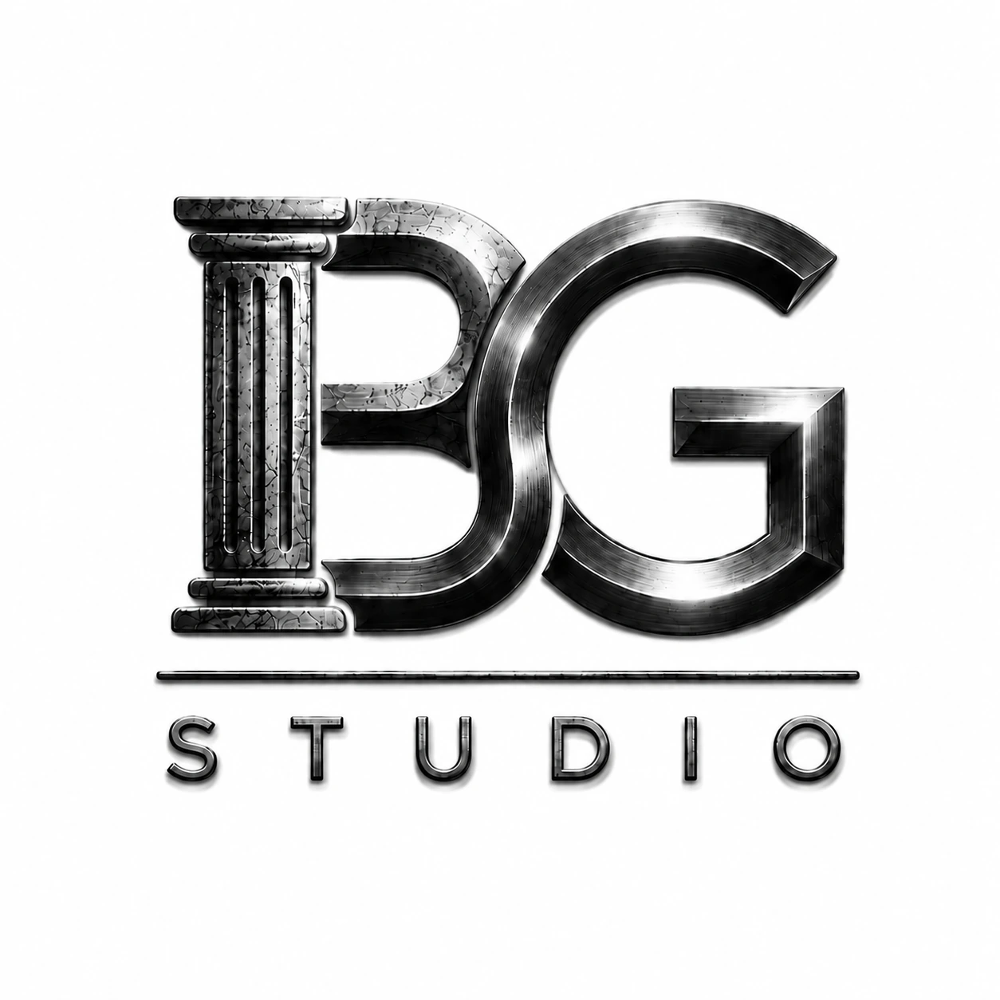
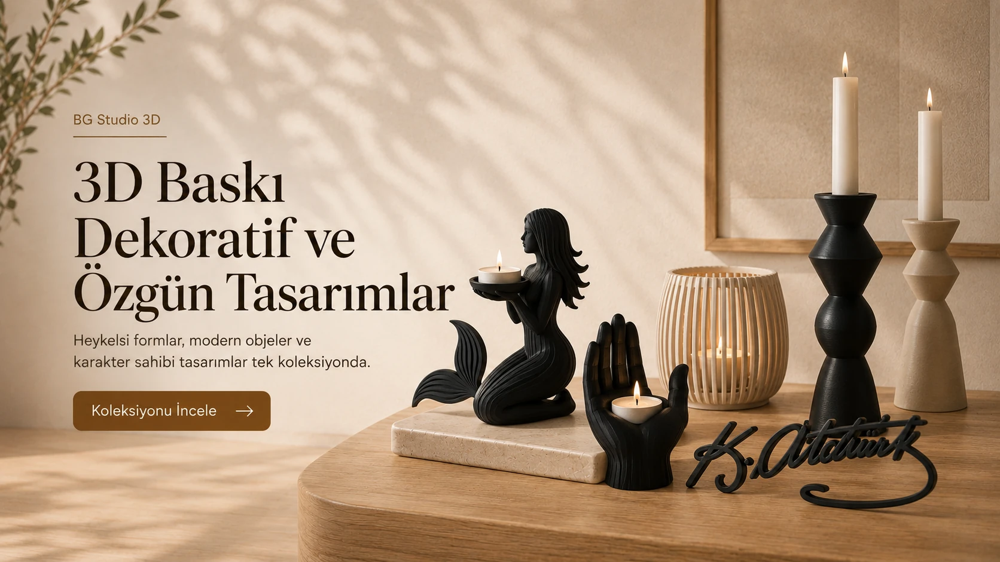
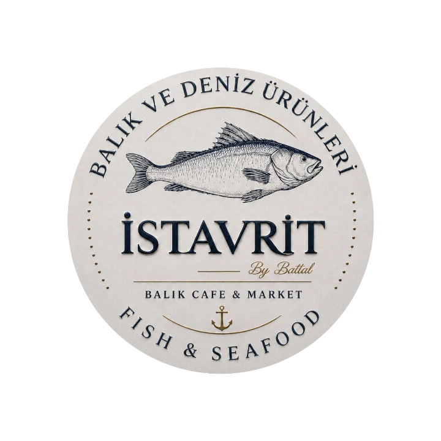
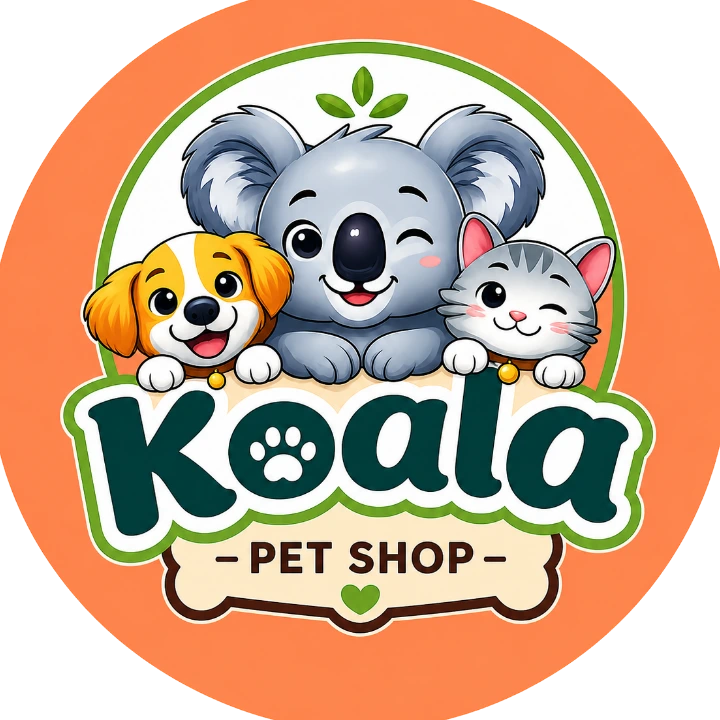
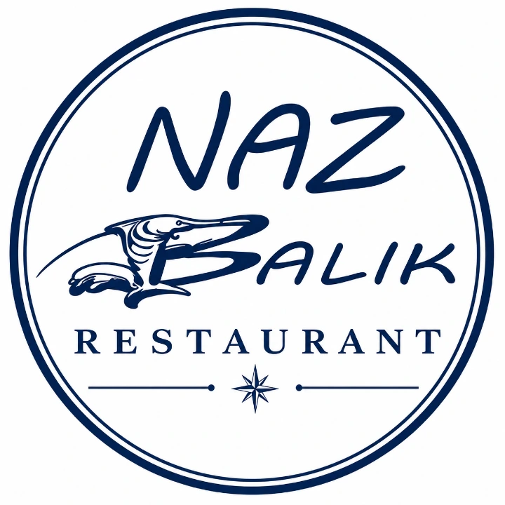
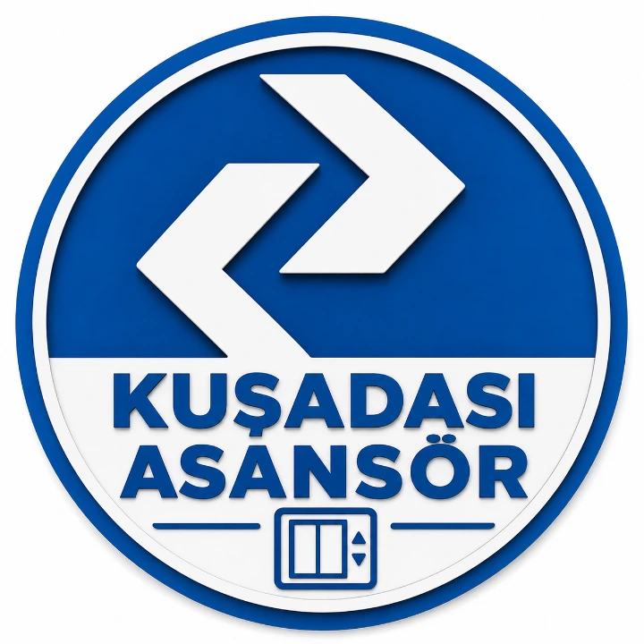

Yerel üretim
Kuşadası’nda tasarım ve üretim.
BG STUDIO NEDİR?

BG Studio; mimarlık ve 3D üretimi aynı tasarım yaklaşımında buluşturur. İhtiyacına göre ilgili iş kolunu seç.

BG STUDIO 3D
3D baskıyı yalnızca üretim yöntemi olarak değil, ürün geliştirme aracı olarak kullanıyoruz. Dekoratif objelerden aydınlatmaya, kişiselleştirilmiş tasarımlardan işletmelere özel çözümlere uzanan bir üretim dünyası.
Kuşadası’nda tasarım ve üretim.
Renk, isim ve kullanım senaryosuna göre.
Tek üründen kurumsal toplu üretime.
Sipariş ve proje süreci WhatsApp üzerinden.
KATEGORİLER
ÖNE ÇIKAN ÜRÜNLER

Klima ızgarasına takılan, pamuk hazneli fan görünümlü koku difüzörü.
Ürünü incele ↗
Modern çizgili, tek parça 3D baskı dekoratif kuş objesi.
Ürünü incele ↗
Renkli, çizgili ve modern 3D baskı lale objesi.
Ürünü incele ↗
Sevimli ve minimal mirket formunda 3D baskı dekor.
Ürünü incele ↗
Kalp detaylı, zarif çizgili tavşan dekor objesi.
Ürünü incele ↗
İçeceği su üzerinde dengede tutmaya yönelik yüzen 3D baskı tasarım.
Ürünü incele ↗
58 mm mıknatıslı açacak üzerine kişiye özel çok renkli tasarım.
Ürünü incele ↗

Xbox veya PlayStation logo seçeneği ve kişiye özel isimle üretilen kulaklık ve kontrolcü standı.
Ürünü incele ↗
Katmanlı 3D yapısıyla Batman siluetini duvarda hacimli ve gölgeli bir görünüme taşıyan dekoratif yüz tasarımı.
Ürünü incele ↗KİŞİYE ÖZEL ÜRETİM
Fotoğraf, eskiz, ölçü veya yalnızca fikir. Üretilebilirliğini birlikte değerlendiriyor, tasarımı baskıya hazırlıyor ve ürünü fiziksel hale getiriyoruz.
Özel üretimi keşfet ↗KURUMSAL ÜRETİM
Restoran, otel, mağaza ve farklı sektörler için toplu üretim, özel parça ve markaya göre tasarım.
Kurumsal üretimi keşfet ↗PROTOTİP & PARÇA ÜRETİM
Ölçü, örnek parça veya problemden başlayarak adaptör, aparat, prototip ve fonksiyonel yedek parça geliştiriyoruz.
Prototip & parça çözümlerini incele ↗NFC & QR
Menü, Google yorumları, Instagram ve WhatsApp gibi dijital temas noktalarını masaüstü ürünlerle birleştiriyoruz.
NFC & QR sistemini incele ↗SAHADAN İŞLER
QR standından fonksiyonel yedek parçaya, aşağıdaki işler doğrudan işletme ihtiyacından çıkıp fiziksel çözüme dönüşen uygulamalardan seçildi.

İstavrit Restaurant için 10 masalık BG Studio NFC Başlangıç Paketi kuruldu. Her masa için özel üretilen toplam 10 adet NFC + QR stand tasarlanıp üretilerek işletmeye teslim edildi. Misafirler telefonlarını standa yaklaştırarak NFC üzerinden veya QR kodu okutarak dijital menüye saniyeler içinde erişebiliyor. İşletme tarafında masa bazlı NFC + QR etkileşimleri, kullanım verileri ve dijital menü BG Studio NFC işletme paneli üzerinden yönetilip takip edilebiliyor.
İşi incele ↗
Koala Petshop için BG Studio NFC altyapısına entegre, Google, Instagram ve WhatsApp erişimlerini tek noktada buluşturan özel NFC + QR hızlı bağlantı standı tasarlanıp üretilerek işletmeye teslim edildi. Müşteriler telefonlarını standa yaklaştırarak NFC üzerinden veya QR kodu okutarak işletmenin Google profiline, Instagram hesabına ve WhatsApp iletişim kanalına saniyeler içinde erişebiliyor. Fiziksel stand ile dijital iletişim kanalları tek bir kompakt sistemde bir araya getirildi.
İşi incele ↗
Naz Balık Restaurant’ın 15 masası için Google Reviews ve Tripadvisor yorum yönlendirmesine özel toplam 15 adet masaüstü QR yorum kartı tasarlanıp uygulandı. Her kartta iki platform için ayrı QR yönlendirmeleri kurgulandı ve tasarım restoranın marka kimliğine özel olarak hazırlandı. Misafirlerin masa üzerinden hızlıca Google veya Tripadvisor yorum sayfasına ulaşabildiği bu sistem, fiziksel kart ile dijital değerlendirme akışını tek noktada bir araya getiriyor.
İşi incele ↗
Kuşadası Asansör için marka logosu ve iletişim bilgilerine özel 100 adet kurumsal anahtarlık tasarlanıp 3D baskı ile üretildi. Anahtarlıklar, işletmenin isteği üzerine mavi-beyaz renklerde hazırlanarak metal halka detaylarıyla kurumsal dağıtıma uygun şekilde tamamlandı.
İşi incele ↗NEDEN BG STUDIO 3D
Görsel olarak iyi görünen bir fikri, baskı süresi, malzeme ve kullanım senaryosuyla birlikte değerlendiriyoruz.
Dekoratif ürün kadar işlevsel parça, stand, aparat ve özel üretim ihtiyaçlarına da odaklanıyoruz.
Tek ürün siparişinden işletmelere özel üretim ve NFC/QR çözümlerine uzanan aynı üretim altyapısı.
NASIL ÇALIŞIYORUZ?
İhtiyacı, kullanım alanını ve hedef ürünü belirliyoruz.
Modeli üretilebilir hale getiriyor, renk ve detayları netleştiriyoruz.
Test, baskı ve gerekiyorsa montaj sürecini tamamlıyoruz.
Kontrol sonrası Kuşadası elden teslim veya Türkiye geneli kargo.
BİR FİKRİN Mİ VAR?
KUŞADASI 3D BASKI
BG Studio 3D, Kuşadası merkezli 3D baskı ve özel üretim atölyesidir. Dekoratif ürünlerden fonksiyonel parçalara, kişiye özel tasarımdan işletmelere yönelik adetli üretime kadar projeleri tasarım, prototip ve üretim adımlarıyla ele alır.
SIK SORULANLAR
Evet. BG Studio 3D Kuşadası merkezli çalışır. Uygun ürünlerde Kuşadası elden teslim, Türkiye genelinde ise kargo seçeneği sunulur.
Evet. Fotoğraf, ölçü, eskiz veya örnek ürün üzerinden talep değerlendirilebilir. Gerekli modelleme kapsamı üretim öncesinde netleştirilir.
Ürüne göre tek adet özel üretim veya prototip yapılabilir. İşletmeler için adetli ve toplu üretim ayrıca planlanır.
Evet. Katman dokusu FDM 3D baskı üretim yönteminin doğal karakteridir. Ürünler doğrudan baskı kalitesini koruyacak şekilde hazırlanır.
Ürün sayfalarından seçenek ve adet belirleyerek WhatsApp mesajı oluşturabilir veya özel üretim ve kurumsal projeler için teklif formunu kullanabilirsiniz.